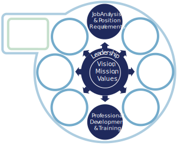
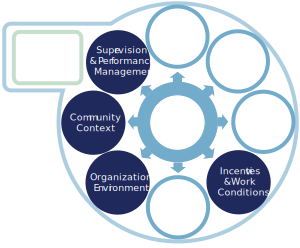
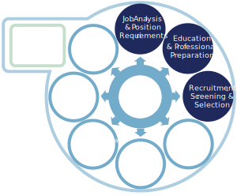

Overview
Get Ready to Explore!
You've just completed the Planning Process. So how will your team use this information to address your workforce gaps?
… By exploring the components of the Workforce Development Framework (WDF)!
The Components & Strategies
![The left-side of the Workforce Development Framework (WDF), showing the following components within Step 5a-Close the Gaps, displayed in a circular workflow: 1. Job Analysis & Position Requirements, 2. Education & Professional Preparation, 3. Recruitment, Screening, & Selection, 4. Incentives & Work Conditions, 5. Professional Development Training, 6. Organizational Environment, 7. Community Context, 8. Supervision & Performance Management. In the middle of the circle, there is a component labeled as , Mission, Values. Surrounding the Vision, Mission, Values is another component, labeled Leadership.](images/WDF_rightSideLargeBright.svg)
This section will walk you through how to explore the WDF components and strategies. It'll help you determine what gap-closing strategies are best suited to the needs of your agency.
Keep in mind…
- These components are inter-related. So you may find that you have to develop strategies for more than one component to be successful.
- You’ll also need to consider what your agency is already doing well. Use this information to help address specific workforce gaps.
Here's what you need to do:
- Review the Quick Guide to Exploration.
This summarizes components your team may explore first, depending on what you uncovered during the Planning Process.
- Review each of the Components and their worksheets.
Worksheets help you:
- Identify your agency's desired outcome.
- Determine how well your agency is doing within each component.
- Pinpoint potential strategies to address and strengthen each component.
- Download, save, review, and work in your saved worksheet for each Component.
- Start Putting it all Together to develop your action plan.
Quick Guide to Exploration
This guide provides guidance and examples about the workforce development components your team may need to explore.
To determine which components to explore first, review your results from the Planning Process. Look at the:
- Outcome of your gap analysis.
- Rating of the importance/significance of the information. (If each step is rated a 4 or higher, select a few, beginning with those reflecting the most consensus among team members.).
- Overall agency Snapshot.
Note:
- Each agency is unique. This guide's examples may not be identical what your agency is currently facing. There may be other factors that your team finds equally or more important.
- The examples of factors that may be contributing to your workforce gap are not intended to be exhaustive, nor are the ratings “prescriptive”.
- They are intended to help your team make some informed decisions about where to begin your exploration of the components.
Remember, your team should eventually explore all of the components—this guide is just to get you started!
The Quick Guide
IF…Identify Need
If…Identify Need
(from the steps in the Planning Process) suggests that any of these factors are contributing to your workforce gap:
Alignment of the agency’s current or anticipated direction of programs with its vision, mission, and values.
Anticipated changes in programs and direction of strategic planning.
Current and emerging demographic trends or patterns reflected in SACWIS or other MIS data that will impact programs.
Changes in leadership and/or organizational restructuring.
AND/OR...
You rated the importance/significance of the information collected in this step as 4 or higher.
THEN explore…
These Components
Component A. Vision, Mission, Values
Component B. Leadership
Component C. Job Analysis & Position Requirements
Component D. Professional Development & Training
Go to the COMPONENTS
IF…Gather Data
If…Gather Data
(from the steps in the Planning Process) suggests that any of these factors are contributing to your workforce gap:
Agency culture and climate & staff morale.
Budget conditions and funding levels.
Legislative changes and departmental initiatives.
Community demographics and characteristics and state/county/community demographic forecast.
Unique or emerging demographic trends; immigration patterns, influx of retirees, net migration patterns.
Social trends; health, mental health, substance abuse.
AND/OR...
You rated the importance/significance of the information collected in this step as 4 or higher.
THEN explore…
These Components
Worksheet F: Incentives & Work Conditions
Worksheet H: Organizational Environment
Worksheet I: Community Context
Worksheet J: Supervision & Performance Management
Go to the COMPONENTS
IF…Analyze Workforce Supply & Demand
If…Analyze Workforce Supply & Demand
(from the steps in the Planning Process) suggests that any of these factors are contributing to your workforce gap:
Supply
- Number and source of new employees.
- Demographic characteristics and diversity of applicants and new hires.
- Staffing patterns and caseload/workload.
- Retention and turnover data.
Demand
- Overall staff:
- Number
- Type
- Characteristics
- Skills
- Future needs may include:
- Program direction
- Budget plans
- Diversity of workforce
AND/OR...
You rated the importance/significance of the information collected in this step as 4 or higher.
THEN explore…
These Components
Worksheet C: Job Analysis & Position Requirements
Worksheet D: Education & Professional Preparation
Worksheet E: Recruitment, Screening & Selection
Go to the COMPONENTS
The Components
Now you're ready to explore each of the components and strategies in the Workforce Development Framework.
A worksheet goes along with each component to help you begin to pinpoint potential strategies to address and strengthen each component.
Remember to download, save, review, and complete the worksheet for each component.
After you've finished exploring them all, you'll be ready to start Putting It All Together.
Go Through the Components
Vision, Mission, Values (Component A)
Examine this component and consider strategies to align your agency’s vision, mission, and values with current or anticipated programs.

Worksheet: Vision, Mission, Values
- How well is your agency doing in this area?
- What strategies should your agency consider to strengthen this component?
STOP Download, save, and work in your saved worksheet!
Leadership (Component B)
Examine this component to explore:
- Leaders’ level of preparation.
- Areas for professional development in creating an inclusive culture.
- Leading a diverse workforce.
Worksheet: Leadership
- How well is your agency doing in this area?
- What strategies should your agency consider to strengthen this component?
STOP Download, save, and work in your saved worksheet!
Job Analysis & Position Requirements (Component C)
Examine this component to consider what areas of knowledge and skills are needed to deliver effective services.
Worksheet: Job Analysis
- How well is your agency doing in this area?
- What strategies should your agency consider to strengthen this component?
STOP Download, save, and work in your saved worksheet!
Education & Professional Preparation (Component D)
Examine this component to determine the sources of new hires and their “fit” with the requirements of the position and the needs of your agency and community.
Explore how well and to what extent your agency partners with colleges and universities to recruit and support students’ transition to the workforce.
Worksheet: Education & Professional Prep
- How well is your agency doing in this area?
- What strategies should your agency consider to strengthen this component?
STOP Download, save, and work in your saved worksheet!
Recruitment, Screening & Selection (Component E)
Examine this component to assess the success of current recruitment, screening, and selection methods.
Consider alternative approaches to secure and retain a diverse, competent workforce.
Worksheet: Recruitment, Screening & Selection
- How well is your agency doing in this area?
- What strategies should your agency consider to strengthen this component?
STOP Download, save, and work in your saved worksheet!
Incentives & Work Conditions (Component F)
Examine this component to consider how internal factors may be impacting your agency’s organizational health and staff morale.
Worksheet: Incentives & Work Conditions
- How well is your agency doing in this area?
- What strategies should your agency consider to strengthen this component?
STOP Download, save, and work in your saved worksheet!
Professional Development & Training (Component G)
Examine this component to consider what areas of knowledge and skills are needed to prepare staff to deliver effective services.
Worksheet: Professional Development
- How well is your agency doing in this area?
- What strategies should your agency consider to strengthen this component?
STOP Download, save, and work in your saved worksheet!
Organizational Environment (Component H)
Examine this component to consider what areas of knowledge and skills are needed to prepare staff to deliver effective services.
Worksheet: Organizational Environment
- How well is your agency doing in this area?
- What strategies should your agency consider to strengthen this component?
STOP Download, save, and work in your saved worksheet!
Community Context (Component I)
Examine this component to consider present and emerging community characteristics and social trends. Consider their influence on the diversity, background, and expertise, of the workforce.
Worksheet: Community Context
- How well is your agency doing in this area?
- What strategies should your agency consider to strengthen this component?
STOP Download, save, and work in your saved worksheet!
Supervision & Performance Management (Component J)
Examine this component to consider how well supervisors are developed and supported in their critical role of ensuring an effective, positive, and inclusive work environment.
Worksheet: Supervision & Performance Management
- How well is your agency doing in this area?
- What strategies should your agency consider to strengthen this component?
STOP Download, save, and work in your saved worksheet!